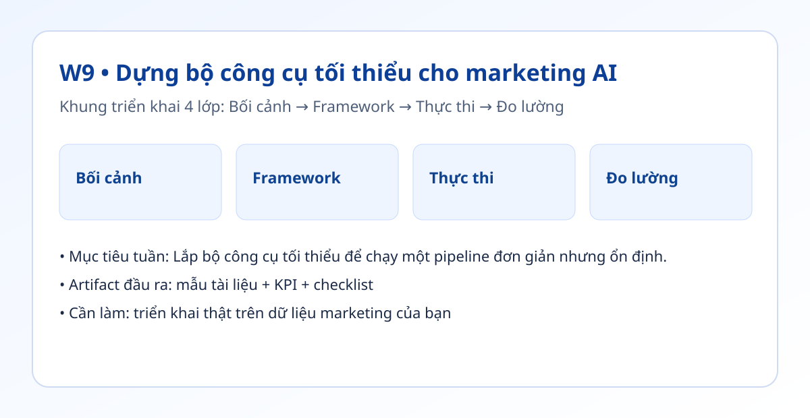

Hình trực quan mô-đun

Bối cảnh thực tế
- Bộ công cụ quá phức tạp làm đội tốn thời gian sửa lỗi thay vì tạo giá trị.
- Giai đoạn đầu nên ưu tiên luồng rõ ràng, ít điểm hỏng và có nhật ký.
- Tuần này bạn dựng luồng cơ bản từ đầu vào đến đầu ra có nhật ký.
Khung tư duy cốt lõi
- Mô hình 4 lớp: Kích hoạt → Hành động AI → Lưu đầu ra → Nhật ký.
- Nguyên tắc tối giản: mỗi luồng chỉ giải quyết 1 mục tiêu cụ thể.
- Thiết kế lỗi có thể xử lý: có phương án dự phòng khi API hoặc dữ liệu lỗi.
Quy trình triển khai chi tiết
- Bước 1: Chọn kích hoạt ổn định: dòng mới trong Google Sheets.
- Bước 2: Thiết lập hành động AI để tạo bản nháp theo prompt chuẩn.
- Bước 3: Ghi đầu ra vào Google Docs hoặc tab riêng trong Sheets.
- Bước 4: Tạo nhật ký lỗi: thời gian chạy, trạng thái, thông báo lỗi.
- Bước 5: Chạy thử 5 lần liên tiếp với dữ liệu khác nhau.
- Bước 6: Khóa phiên bản luồng sau khi đạt ổn định.
Tình huống nhỏ với số liệu
| Tác vụ | Thủ công | Tự động |
|---|---|---|
| Bản nháp 1 bài | 40 phút | 15 phút |
| Nhập dữ liệu | 10 phút | 2 phút |
| Tổng hợp nhật ký | 15 phút | 3 phút |
Kết luận: Một luồng tối giản nhưng có nhật ký giúp đội tự tin mở rộng dần mà không mất kiểm soát.
Sản phẩm bàn giao tuần này
- Sơ đồ bộ công cụ 1 trang.
- Luồng chạy thật 5 lần liên tiếp.
- Bảng nhật ký lỗi và quy tắc xử lý lỗi.
Bài tập thực hành (45-60 phút)
- Thiết kế và chạy 1 luồng từ Sheets → AI → Docs.
- Ghi lại 3 lỗi đầu tiên và cách xử lý.
- Tối ưu để đạt 5 lần chạy liên tiếp không lỗi.
Thang đo hoàn thành
| Mức | Mô tả |
|---|---|
| Mức 0 | Chỉ có ý tưởng stack |
| Mức 1 | Luồng chạy nhưng thiếu nhật ký |
| Mức 2 | Luồng + nhật ký + phương án dự phòng |
| Mức 3 | Luồng ổn định >= 5 lần liên tiếp |
Lỗi thường gặp
- Thêm quá nhiều mô-đun ngay từ đầu.
- Không có bước nhật ký lỗi.
- Không tách dữ liệu kiểm thử với dữ liệu thật.
Video thực hành (tùy chọn)
Phần học chính đã đầy đủ bằng văn bản và ví dụ. Nếu bạn muốn xem thao tác thực tế, dùng các video gợi ý sau:
Đánh dấu tiến độ
Tuần này chưa hoàn thành
Đã hoàn thành tuần 9